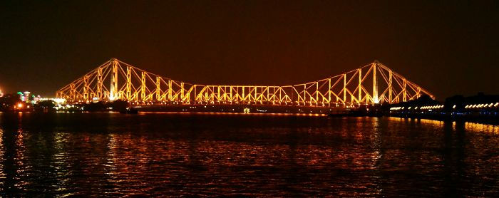

KOLKATA
Kolkata (formerly Calcutta) is the capital of India's West Bengal state. Founded as an East India Company trading post, it was India's capital under the British Raj. It has some great things like grand colonial architecture, art galleries and cultural festivals. It’s also home to Mother House, headquarters of the Missionaries of Charity, founded by Mother Teresa, whose tomb is on site.